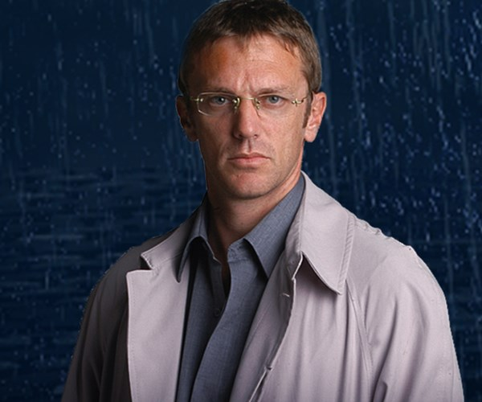

Equipo
Quienes son los maestros de estrategia, movilidad, caracterización e investigación que resuelven los problemas con ingenio, combinando ciencia y tácticas de persuación.

Mario Santos: logística y planificación
Mario Santos, líder de Los Simuladores, es un estratega astuto y refinado con un gusto por el té Earl Grey. Viudo y culto, destaca por su inteligencia calculadora y su frialdad ocasional. Hijo de un escritor, superó la bancarrota familiar con su astucia desde joven. Desprecia el consumismo y el progreso empresarial. Adoptando el nombre León Stofenmacher en operativos, Santos fusiona su pasado y presente. Su hábito de encender habanos con fuego ajeno añade carisma, mientras que su encuentro con una empleada bancaria en "Fuera de cálculo" agrega capas a su complejidad. Santos personifica la mezcla única de sofisticación y astucia en Los Simuladores.

Pablo Lamponne: técnica y movilidad
Hábil logístico de Los Simuladores, despliega una apariencia dura, pero tras esa fachada se revela un personaje complejo y profundamente leal. Su papel crucial en la logística y obtención de elementos para los operativos demuestra su astucia y habilidades estratégicas. A pesar de enfrentar traumas infantiles y vivencias en la guerra de Malvinas, Lamponne mantiene una admirable fortaleza. Su relación con Betún, su inteligente perro, añade un toque conmovedor al mostrar su conexión emocional y lealtad. Además, su admiración por Emilio Ravenna agrega una dimensión de camaradería al equipo. En resumen, Lamponne aporta un equilibrio valioso entre fortaleza y sensibilidad, contribuyendo de manera significativa a la dinámica positiva del grupo..

Emilio Ravenna: caracterización
El virtuoso de la caracterización en Los Simuladores, aporta vitalidad y versatilidad al grupo. Con una personalidad abierta, frívola y una vida sexual activa, Ravenna contrasta con sus compañeros. Su destreza artística y habilidades recreativas muestran una faceta multifacética. Bajo el apodo "Camaleón", demuestra su capacidad para encarnar diversos roles en los operativos, siendo Máximo Cozzetti uno de sus nombres recurrentes. La actitud despreocupada y feliz de Ravenna añade un toque de ligereza al equipo, equilibrando la intensidad de las misiones con su naturaleza animada y adaptable.
Gabriel David Medina: investigación
Gabriel Medina, el investigador de Los Simuladores, aporta sensibilidad y honestidad al grupo. Su pasado como periodista refleja su habilidad para obtener información crucial en los operativos. Amante de la poesía, los animales (excepto las serpientes) y la música variada, Medina destaca por su naturaleza reflexiva y apasionada. Su enfoque en el amor y su negativa a tener relaciones sin enamorarse subrayan su integridad. Aunque oculta sus preocupaciones bajo una apariencia seria, su conexión con la música, incluyendo éxitos de Disney y Sandra Mihanovich, revela su lado más humano. Con el nombre de Jacques Dupont en muchos operativos, Medina añade una dimensión artística y emotiva al equipo.